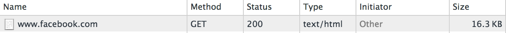

class: center, middle # HTTP Caching in Web Applications Martins Sipenko .footnote[IPC 2014, 28th October, Munich] --- # About me - Employed by Accenture - Work for Discovery Communication International - Systems architect/Engineer - PHP Community Lead in Accenture Latvia - PHP Developer since PHP 4 - Huge fan of Open Source - Working on [phplint](https://github.com/martinssipenko/phplint) <table> <tr> <td> </td> <td style="padding: 30px; padding-top: 64px;"> </td> </tr> </table> --- # Why HTTP caching? --- # Why HTTP caching? Using HTTP Caching is good for several reasons: - Can be used to decrease latency - Can decrease server response times - Lowers the costs of running origin servers - Lowers the costs of data transfer --- # How HTTP works? --- # How HTTP works? As we all know HTTP is very basic - Request - Response <object data="basic_http.svg" type="image/svg+xml" style=" position: absolute; top: 28%; left: 50%; "></object> --- # How HTTP works? As we all know HTTP is very basic - Request - Response - Along came headers <object data="basic_http.svg" type="image/svg+xml" style=" position: absolute; top: 28%; left: 50%; "></object> ```bash $ curl -ivv http://some.host.com > /dev/null > GET / HTTP/1.1 > User-Agent: Mozilla/5.0 (compatible; MSIE 9.0; Windows NT 6.1; Trident/5.0) > Host: some.host.com > Accept: */* > Referer: > < HTTP/1.1 200 OK < Date: Mon, 27 Oct 2014 18:08:28 GMT < Server: nginx < Content-Type: text/html; charset=UTF-8 ``` --- # HTTP Headers --- # HTTP Headers What Wikipedia says: ```bash HTTP header fields are components of the header section of request and response messages in the Hypertext Transfer Protocol (HTTP). They define the operating parameters of an HTTP transaction. ``` --- # HTTP Headers What Wikipedia says: ```bash HTTP header fields are components of the header section of request and response messages in the Hypertext Transfer Protocol (HTTP). They define the operating parameters of an HTTP transaction. ``` `Accept`, `Accept-Charset`, `Accept-Datetime`, `Accept-Encoding`, `Accept-Language`, `Accept-Ranges`, `Access-Control-Allow-Origin`, `Age`, `Allow`, `Authorization`, `Cache-Control`, `Common`, `Connection`, `Content-Disposition`, `Content-Encoding`, `Content-Language`, `Content-Length`, `Content-Location`, `Content-MD5`, `Content-Range`, `Content-Security-Policy`, `Content-Type`, `Cookie`, `Date`, `DNT`, `ETag`, `Example`, `Expect`, `Expires`, `Field`, `From`, `Front-End-Https`, `Host`, `If-Match`, `If-Modified-Since`, `If-None-Match`, `If-Range`, `If-Unmodified-Since`, `Last-Modified`, `Link`, `Location`, `Max-Forwards`, `Origin`, `Permanent`, `Pragma`, `Proxy-Authenticate`, `Proxy-Authorization`, `Proxy-Connection`, `Public-Key-Pins`, `Range`, `Referer`, `Refresh`, `Response`, `Retry-After`, `Server`, `Set-Cookie`, `Status`, `Strict-Transport-Security`, `TE`, `Trailer`, `Transfer-Encoding`, `Upgrade`, `User-Agent`, `Vary`, `Via`, `Warning`, `WWW-Authenticate`, `X-ATT-DeviceId`, `X-Content-Security-Policy`, `X-Content-Type-Options`, `X-Forwarded-For`, `X-Forwarded-For:`, `X-Forwarded-Proto`, `X-Frame-Options`, `X-Http-Method-Override`, `X-Powered-By`, `X-Requested-With`, `X-UA-Compatible`, `X-Wap-Profile`, `X-WebKit-CSP`, `X-XSS-Protection`, `X-*` --- # HTTP Headers There are plenty of header fields out there, lets look at some cache related fields - Controlling cache: - `Cache-Control: public` - `Cache-Control: public, max-age=600` - `Cache-Control: private` - `Cache-Control: no-cache, no-store` - `Expires: Mon, 27 Oct 2014 19:21:27 GMT` - Content revalidation: - `Etag: 01ebd317c578e6e6f54ac5cc0274b099` - `Last-Modified: Mon, 27 Oct 2014 19:21:27 GMT` - Others: - `Age: 60` - `X-Cache: Hit` - `Vary: Accept-Encoding` --- #Very basic caching ```bash Every device is a basic cache device and should treat the cache headers the same way. This includes browsers, proxy caches and gateway caches. ``` --- #Very basic caching - Client sends a request - Origin server responds with response, with cache headers in it - Client treats cache headers in response and caches assets - Works well for static assets - Cache busting should be done by having version in static asset filename `style.c578e6e6.css` ```bash $ curl -ivv http://some.host.com/style.c578e6e6.css > /dev/null > GET / HTTP/1.1 > User-Agent: Mozilla/5.0 (compatible; MSIE 9.0; Windows NT 6.1; Trident/5.0) > Host: some.host.com > Accept: */* > Referer: > < HTTP/1.1 200 OK < Date: Mon, 27 Oct 2014 18:08:28 GMT < Server: nginx < Content-Type: text/css; charset=UTF-8 < Cache-Control: public, max-age=31536000 < Expires: Mon, 27 Oct 2015 18:08:28 GMT ``` --- #Very basic caching - Client sends a request - Origin server responds with response, with cache headers in it - Client treats cache headers in response and caches assets - Works well for static assets - Cache busting should be done by having version in static asset filename `style.c578e6e6.css` <object data="client_cache.svg" type="image/svg+xml" style=" position: absolute; top: 50%; left: 10%; "></object> --- #Very basic caching ### What did we gain? --- #Very basic caching ### What did we gain? - No more requests over the wire if content is available locally --- # Lets add cache proxy - Client sends a request - Cache miss on edge server, request passed to Origin - Origin server responds with response, with cache headers in it - Edge server treats cache headers, caches response and passes to Client - Client treats cache headers in response and caches assets <object data="cache_layer.svg" type="image/svg+xml" style=" position: absolute; top: 45%; left: 10%; "></object> --- # Lets add cache proxy - Client sends a request - Cache miss on edge server, request passed to Origin - Origin server responds with response, with cache headers in it - Edge server treats cache headers, caches response and passes to Client - Client treats cache headers in response and caches assets ### First request ```bash $ curl -ivv http://some.host.com/style.c578e6e6.css > /dev/null > GET / HTTP/1.1 > User-Agent: Mozilla/5.0 (compatible; MSIE 9.0; Windows NT 6.1; Trident/5.0) > Host: some.host.com > Accept: */* > Referer: > < HTTP/1.1 200 OK < Date: Mon, 27 Oct 2014 18:08:28 GMT < Server: nginx < Content-Type: text/css; charset=UTF-8 < Cache-Control: public, max-age=31536000 < Expires: Mon, 27 Oct 2015 18:08:28 GMT < Age: 1 < X-Cache: miss ``` --- # Lets add cache proxy - Client sends a request - Cache miss on edge server, request passed to Origin - Origin server responds with response, with cache headers in it - Edge server treats cache headers, caches response and passes to Client - Client treats cache headers in response and caches assets ### Subsequent request ```bash $ curl -ivv http://some.host.com/style.c578e6e6.css > /dev/null > GET / HTTP/1.1 > User-Agent: Mozilla/5.0 (compatible; MSIE 9.0; Windows NT 6.1; Trident/5.0) > Host: some.host.com > Accept: */* > Referer: > < HTTP/1.1 200 OK < Date: Mon, 27 Oct 2014 18:08:28 GMT < Server: nginx < Content-Type: text/css; charset=UTF-8 < Cache-Control: public, max-age=31536000 < Expires: Mon, 27 Oct 2015 18:08:28 GMT < Age: 60 < X-Cache: hit ``` --- # Lets add cache proxy ### What did we gain? --- # Lets add cache proxy ### What did we gain? - No more requests over the wire if content is available locally - Content that is already generated by origin and if still valid comes from caching layer - Caching layer can be distributed globally over regions (CDN) --- # Lets add cache proxy ### Some numbers 500 Requests per minute |Cache time (minutes) | Hit Ratio | Request to Origin / Hr| |---------------------|-----------|-----------------------| |1 | 99.8% | 60 | |5 | 99.96% | 12 | |20 | 99.99% | 3 | |60 | 99.997% | 1 | |86400 | 99.9998% | <1 | --- # Okay, what about dynamic content? --- # Okay, what about dynamic content? - Same things apply --- # Okay, what about dynamic content? - Same things apply # But, it's a bit more trickier --- # Okay, what about dynamic content? - Same things apply # But, it's a bit more trickier - You **CAN NOT** have long expiration times - You can not clear cache - How do you do invalidation? --- # Conditional requests - RES: `Last-Modified: Last-Modified: Mon, 27 Oct 2014 19:21:27 GMT` - REQ: `If-Modified-Since: Last-Modified: Mon, 27 Oct 2014 19:21:27 GMT` ```php <?php $ts = 1414445105; $last_modified = gmdate('r', $ts); header('Cache-Control: public'); header('Last-Modified: ' . $last_modified); if ( isset($_SERVER['HTTP_IF_MODIFIED_SINCE']) && $ts <= strtotime($_SERVER['HTTP_IF_MODIFIED_SINCE']) ) { header('HTTP/1.1 304 Not Modified'); exit(0); } // Do something very hard sleep(5); ``` --- # Conditional requests - RES: `Last-Modified: Last-Modified: Mon, 27 Oct 2014 19:21:27 GMT` - REQ: `If-Modified-Since: Last-Modified: Mon, 27 Oct 2014 19:21:27 GMT` ### First request ```bash $ time curl -ivv -H "Host: ipc2014.loc" http://127.0.0.1/mod.php > /dev/null > GET /mod.php HTTP/1.1 > User-Agent: curl/7.35.0 > Accept: */* > Host: ipc2014.loc > < Server: nginx/1.6.2 < Date: Tue, 28 Oct 2014 11:50:10 GMT < Content-Type: text/html; charset=UTF-8 < Transfer-Encoding: chunked < Connection: keep-alive < Cache-Control: public < Last-Modified: Mon, 27 Oct 2014 21:25:05 +0000 < [data not shown] real 0m5.020s user 0m0.005s sys 0m0.006s ``` --- # Conditional requests - RES: `Last-Modified: Last-Modified: Mon, 27 Oct 2014 19:21:27 GMT` - REQ: `If-Modified-Since: Last-Modified: Mon, 27 Oct 2014 19:21:27 GMT` ### Subsequent request ```bash $ time curl -ivv -H "Host: ipc2014.loc" \ -H "If-Modified-Since: Mon, 27 Oct 2014 21:25:05 +0000" \ http://127.0.0.1/mod.php > /dev/null > GET /mod.php HTTP/1.1 > User-Agent: curl/7.35.0 > Accept: */* > Host: ipc2014.loc > If-Modified-Since: Mon, 27 Oct 2014 21:25:05 +0000 > < HTTP/1.1 304 Not Modified < Server: nginx/1.6.2 < Date: Tue, 28 Oct 2014 11:52:48 GMT < Connection: keep-alive < Cache-Control: public < Last-Modified: Mon, 27 Oct 2014 21:25:05 +0000 < real 0m0.019s user 0m0.005s sys 0m0.005s ``` --- # Conditional requests - RES: `Etag: 7eb1bff98bf8de033ee315417dab1382` - REQ: `If-None-Match: 7eb1bff98bf8de033ee315417dab1382` ```php <?php $id = 1; $last_mod = 1414495719; $etag = md5($id . $last_mod); header('Etag: ' . $etag); if ( isset($_SERVER['HTTP_IF_NONE_MATCH']) && $_SERVER['HTTP_IF_NONE_MATCH'] === $etag ) { header('HTTP/1.1 304 Not Modified'); exit(0); } // Dom something hard here sleep(5); ``` --- # Conditional requests ### First request ```bash $ time curl -ivv -H "Host: ipc2014.loc" http://127.0.0.1/etag.php > /dev/null > GET /etag.php HTTP/1.1 > User-Agent: curl/7.35.0 > Accept: */* > Host: ipc2014.loc > < Server: nginx/1.6.2 < Date: Tue, 28 Oct 2014 11:56:19 GMT < Content-Type: text/html; charset=UTF-8 < Transfer-Encoding: chunked < Connection: keep-alive < Etag: 7eb1bff98bf8de033ee315417dab1382 < { [data not shown] real 0m5.019s user 0m0.005s sys 0m0.006s ``` --- # Conditional requests ### Subsequent request ```bash $ time curl -ivv -H "Host: ipc2014.loc" \ -H "If-None-Match: 7eb1bff98bf8de033ee315417dab1382" \ http://127.0.0.1/etag.php > /dev/null > GET /etag.php HTTP/1.1 > User-Agent: curl/7.35.0 > Accept: */* > Host: ipc2014.loc > If-None-Match: 7eb1bff98bf8de033ee315417dab1382 > < HTTP/1.1 304 Not Modified < Server: nginx/1.6.2 < Date: Tue, 28 Oct 2014 11:57:16 GMT < Connection: keep-alive < Etag: 7eb1bff98bf8de033ee315417dab1382 < real 0m0.026s user 0m0.006s sys 0m0.008s ``` --- # Conditional requests ### What should we do this? --- # Conditional requests --- # Conditional requests  --- # Conditional requests ### 16000 bytes transfered vs ### 300 bytes transfered --- # Conditional requests ### What did we gain? - Validation of Etag is less expensive that generation of whole response - Amount of data transfred ower the wire decreases significantly - Stale-While-Revalidate can be used on proxy cache level (if supported) --- # The power of `Vary` header - Used to tell cache devices which header fields to use for generating a cache "key" --- # Some suggestions - **DO NOT** manage headers for dynaic content on web server level, they should be managed by application itself - Be smart about what you cache and for how long - Thing well about how you will invalide/revalidate you cached assets --- # Credits ### Igor Brezac Chief Systems Architect, Digital Media at Discovery Communications --- # Resources - http://www.w3.org/Protocols/rfc2616/rfc2616-sec14.html - https://github.com/martinssipenko/ipc2014-http-cache --- class: center, middle #Thank you! martins.sipenko@gmail.com @martinssipenko